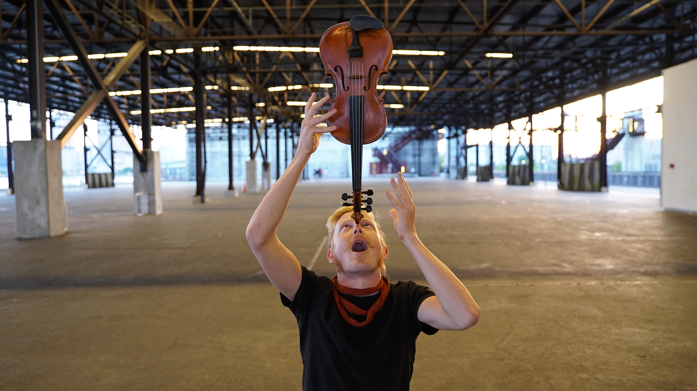

Ira Echo
Musician
Ira Echo, with his foundation in dance and music improvisation, is a performer who brings spontaneity, play and virtuosity to their collaborations. Specializing in creating soundscapes for dancers, Ira's practice lies at the intersection of percussion, somatics, found sound, and eastern european violin tradition. Ira's movement and music practice is informed by their roots in Contact Improvisation as well as their study of Gaga and butoh. Ira dances and performs music regularly in improv communities around the world. Their work has been featured at Fort Mason center for Arts and Culture, Material Institute of New Orleans, Earthdance, San Francisco Movement Arts Festival.